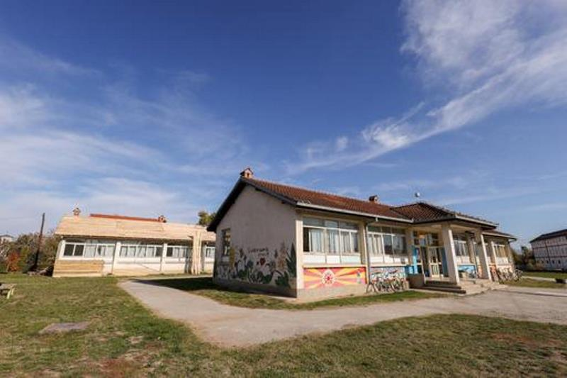
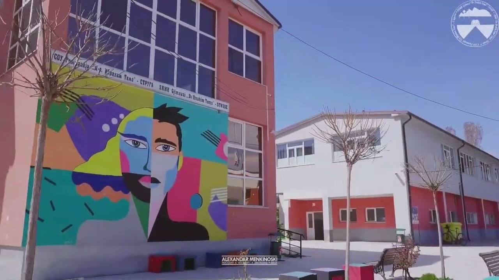
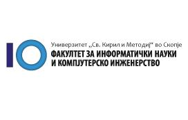

Образование
Основно образование
- Основно образование завршив во ПОУ ,,Дедо Лазор Циркоски" во
село Враништа-Струга.

Средно образование
- Средно образование завршив во Гимназијата ,,Д-р Ибрахим Темо" во Струга, насока: Природно-математичко подрачје комбинација
А.

Високо образование
- Моментално сум студент во прва година на Факултетот за
информатички науки и компјутерско инженерство на
Универзитетот ,,Св. Кирил и Методиј" во Скопје, студиска
програма: Примена на информациски технологии(ПИТ).
